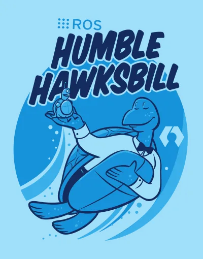

ROS2 Tutorials

The Robot Operating System (ROS) is a set of software libraries and tools for building robot applications.
From drivers and state-of-the-art algorithms to powerful developer tools, ROS has the open source tools you need for your next robotics project.
The official documentation for ROS2 and its distributions can be found here.
{kind=link}
Note
This tutorial assumes that you have dual booted your system with Ubuntu 22.04 or have a WSL2 installation of Ubuntu 22.04 on your Windows machine.
Installation⚓︎
To install ROS2, you need the Ubuntu 22.04 Jammy Jellyfish release. You can download the ISO file from here.
Installing ROS2⚓︎
Once you have installed Ubuntu 22.04, open a terminal instance and run the following commands:
sudo apt install software-properties-common # install add-apt-repository
sudo add-apt-repository universe # add universe repository
This will add the universe repository to your system. Now, run the following commands to install curl and add the ROS2 keyring to your system.
sudo apt update && sudo apt install curl -y # update and install curl
sudo curl -sSL https://raw.githubusercontent.com/ros/rosdistro/master/ros.key -o /usr/share/keyrings/ros-archive-keyring.gpg # add ROS2 keyring
Note
A keyring is a collection of cryptographic keys that are stored in a file on your system. The keyring is used to verify the authenticity of the packages that you install on your system. Here, we are adding the ROS2 keyring to our system.
{kind=link}
Now, add the ROS2 repository to your system and install ROS2.
echo "deb [arch=$(dpkg --print-architecture) signed-by=/usr/share/keyrings/ros-archive-keyring.gpg] http://packages.ros.org/ros2/ubuntu $(. /etc/os-release && echo $UBUNTU_CODENAME) main" | sudo tee /etc/apt/sources.list.d/ros2.list > /dev/null # add ROS2 repository
sudo apt update && sudo apt upgrade # update the package list and upgrade the packages
Note
The tee command is used to write the output of a command to a file. Here, we are writing the ROS2 repository to the /etc/apt/sources.list.d/ros2.list file. The > /dev/null part is used to suppress the output of the command.
{kind=link}
Now, install ROS2.
{kind=link}
With this, you have successfully installed ROS2 on your system. Now, you need to source the ROS2 setup file to your .bashrc file. This will allow you to use ROS2 commands in your terminal.
echo "source /opt/ros/humble/setup.bash" >> ~/.bashrc # source the ROS2 setup file, run this only once
source ~/.bashrc # source the .bashrc file, reloads the current terminal instance
tail ~/.bashrc # check if the setup file has been sourced
Note
The >> operator is used to append the output of a command to a file. Here, we are appending the source /opt/ros/humble/setup.bash command to the .bashrc file.
.bashrc is a hidden file in your home directory that is executed every time you open a terminal instance.
{kind=link}
Now, run the following command to check if ROS2 has been installed successfully.
{kind=link}
Running examples⚓︎
Now, let's run some examples to check if ROS2 is working properly. Run the following commands to run the talker and listener examples.
Now, open a new terminal instance and run the following command.
{kind=link}
Submitting Tasks⚓︎
To submit a task or exercise, you need to fork this repository and make changes in your forked repository.
Forking the Repository⚓︎
Head over to this repository and click on the fork button on the top right corner of the page.
{kind=link}
This will create a copy of the repository in your GitHub account. Now, clone the repository to your system.
git clone <your-forked-repo-url> # clone the repository
cd Learn-ROS2 # change directory to the repository
Making Changes⚓︎
Open the folder in your favourite editor and make changes to the files. Once you are done, run the following commands to commit your changes.
git add . # add all the files to the staging area
git commit -m "Add <task-name>" # commit your changes
git push origin master # push your changes to your forked repository
{kind=link}